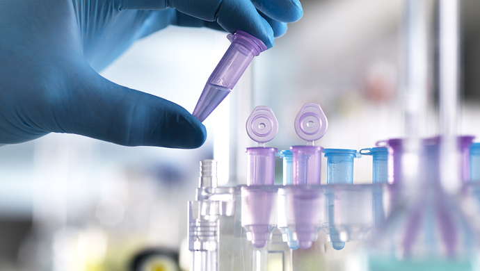
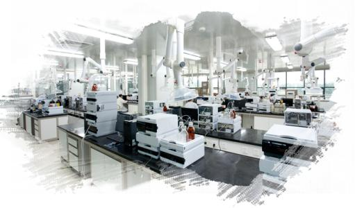

cfDNAS与液体活检
随着“液体活检”的兴起，循环游离DNA（CfDA）的应用越来越多。例如在临床上应用于辅助诊断癌症、预测和监测癌症药物治疗效果、鉴别胎儿机体异常、评估移植器官的健康性等。
但是由TcfDNA于在血液中含量非常低，抽提得率低，传统方法往往是通过增大血液上样量来满足下游实验需求，但是实际上能从孕妇和病人处得到的样本量是有限的。那么如何提高得率、从体积有限的临床血液样本中获取足够多的JcfDNA和更多信息呢？此外，传统方法提取的 Aj通常是150-200bp左右的细胞凋亡产生的cfNA，其实还有一部分少量存在的长片段 cfDNA被漏掉了，而这一部分对于后续疾病监测是非常有用的，如检测癌症患者是否存在耐药性突变等。
国际研讨会
临床分子病理与人组织标本库； 分子免疫与标记示踪； 干细胞纯化和应用； 临床生物信息学与生物靶标； 生物技术与转化医学。 CIB2012主要交流形式包括：
最新科研成果大会交流； 科技需求和项目介绍会； 最新技术和产品圆桌会； 科技管理高端对话会。CIB2012 is an international meeting and platform for scientists from both academies and companies to communicate advanced biotechnologies and instrumentations in clinical research. CIB2012 acts as a bridge between academics and companies to understand the development and potential of advanced biotechnologies and instrumentations for commercialization and clinical application.

突破离子通道与离子转运蛋白研究瓶颈的靶药研发方法
Aurora的非放射性Flux Assay以及ICR离子通道阅读器，能很好的为离子通道/转运蛋白的靶药开发，提供一个高质量、高通量的筛选研究平台，尤其是针对某些电中性的目标。而且实验验证，该方法的数据与其他检测研究方法数据吻合，很好地反映化合物对目标通道/转运蛋白作用的效果。文章中也对放射性Flux Assay、Tl+敏感的荧光染料指示剂以及Aurora非放射性Flux
三种离子通道研究方法进行了总结，发现无论从细胞毒性、结果准确性还是操作安全性上，Aurora的非放射性Flux Assay都更胜一筹。

追踪金枪鱼：SMRT测序帮助拯救“海洋王者”
与现有的来自日本科学家们，基于短读长测序技术获得的太平洋金枪鱼（T. orientalis）基因组相比，通过PacBio SMRT测序技术得到的数据，具有更强的连续性，碎片信息大为减少。通过组装，生成了约2,000个Contig。这相对于日本科学家们所得到的16,802个Contig，减少了8倍多。Paul Peluso博士认为SMRT测序技术获得的高质量组装数据更加有利于人们寻找金枪鱼物种之间的基因组差异，从而用于开发探针或标记物，进而方便在全球范围内对这些物种进行分类。